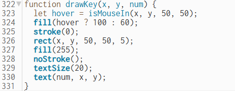
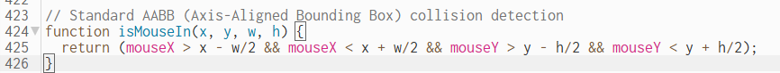

Our project is an Among Us themed clicker game made with p5.js. The player clicks the crewmate to earn points and buy upgrades. We wanted to make a game that was fun and included mini games, animations, a working upgrade system, and chill music.

One parameter method we used was drawKey(x, y, num). This method creates keypad buttons for the sabotage mini game. The parameters let us change the position and number of each key. This saved time because we did not need to write the same code over and over again.

One return method we used was isMouseIn(x, y, w, h). This method returns true or false depending on if the mouse is inside a button area. It was useful because we reused it for buttons, the shop, and mini games. it made the code easier and faster.
We used AI to help us understand coding ideas and fix bugs. It helped explain functions, arrays, and game logic. AI made coding faster because it could give examples and suggestions, but we still needed to test the code and understand it ourselves. Sometimes the code needed changes before it worked correctly because the lllm made muistakes.